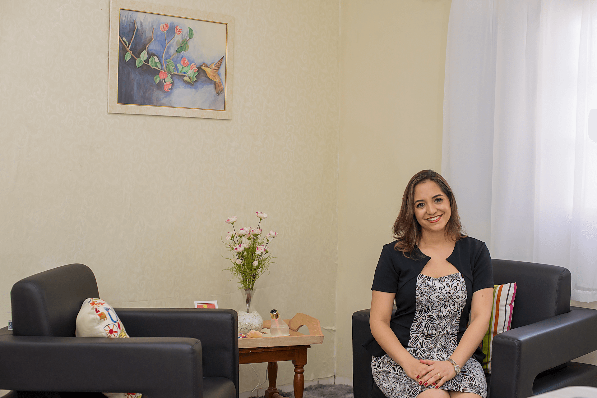

Um espaço reservado para falar sobre o que está difícil sem julgamentos.
Sobre mim
Carla SuzanaMarinho
Psicóloga clínica, neuropsicóloga e terapeuta cognitivo-comportamental, com atendimento online para adolescentes e adultos.


Atendimento online
Português e inglês para brasileiros e pessoas que falam inglês.
Trajetória
Atendimento acolhedor para abrir novas possibilidades.
Cuidar da saúde mental é um direito. O acolhimento e o vínculo terapêutico fazem parte desse caminho.
Acredito que cada pessoa tem recursos para mudar o que deseja. Há momentos em que nos sentimos desconectados de nós e dos outros; minha função é caminhar ao seu lado com ética, escuta e técnicas fundamentadas na ciência psicológica.
Sou graduada em Psicologia pela Universidade Federal da Grande Dourados - UFGD (2014), com formação em Desenvolvimento Humano e Aprendizagem pela Unesp - Bauru, neuropsicologia pela IBNeuro e terapia cognitivo-comportamental pela PUC-PR.
Minha experiência inclui acompanhamento psicossocial de usuários e famílias, trabalho com crianças, adolescentes, contexto escolar e vivências interculturais.
Princípios
Escuta, clareza e cuidado ético.
Por compromisso com sigilo e privacidade, este site não publica testemunhos de pacientes.
Organização de pensamentos, emoções e padrões que aparecem na rotina.
Construção de caminhos possíveis para lidar com rotina, relações e escolhas.
Cuidado profissional, respeito à história de cada pessoa e privacidade.
Pronto para conversar sobre terapia?
Ir para contato